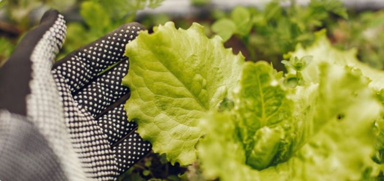

FEIRANTES COM FUTURO
Acreditamos no poder das feiras livres e dos pequenos produtores.
Por isso, oferecemos um programa exclusivo para feirantes que desejam vender sem precisar investir um capital inicial.
Se você é feirante e busca apoio para crescer, inscreva-se no nosso programa e tenha acesso a produtos da nossa horta, estrutura de vendas e oportunidades únicas.
Saiba mais e inscreva-se 